El cuerpo humano responde ante estímulos. Uno de estos estímulos podría ser el ejercicio físico,
conocemos múltiples tipos de deporte según la demanda de resistencia, que puede ser o bien
aeróbica o bien anaeróbica; por un lado, la resistencia aeróbica consiste en realizar deporte con aire suficiente
para el cuerpo, este tipo de ejercicio hace que el cuerpo no vaya muy al límite, pues llega aire suficiente
a los alvéolos, algunos ejemplos de este tipo de deporte podrían ser el running, la natación, el ciclismo
o el senderismo. Por otro lado, existe la resistencia anaeróbica, esta trabaja con poco oxígeno, pues no utiliza este
como fuente principal de energía y, permite realizar actividad física intensa durante un corto período de tiempo; entre
este tipo de deportes encontramos el levantamiento de pesas, algunas modalidades del atletismo como
los 100 metros lisos...
Cómo empezar a entrenar:
La situación de partida de una persona al empezar en el gimnasio, puede enfocarse de diversas formas. Entre estas encontramos
las siguientes:
Perdida de grasa: Personas con sobrepeso o que buscan un mejor físico suelen empezar en el gimnasio
para perder grasa y substituírla por musculo.
Ganancia de masa muscular: Consiste en añadirse peso a uno mismo, mediante etapas de volumen por ejemplo,
para posteriormente substituír ese peso adquirido por masa muscular.
Ejercicio complementario a otro: Esta situación se dá sobre todo en deportistas
profesionales, que además de su deporte, también realizan trabajos de fuerza en el gimmnasio.
Tipos de entrenamiento:
Principalmente distinguímos tres tipos de entrenamiento en el gimnasio, el entrenamiento de fuerza, de mantenimiento y el enfocado
a la hipertrofia; hablaremos un poco de cada uno de ellos:
Fuerza: Este tipo de entrenamiento es el que ejecutan las personas interesadas en ganar fuerza, consiste en
levantar grandes pesos, sobre todo lo que conocemos como pesos libres (ejercicios como press banca, peso muerto,
sentadilla...), a pocas repeticiones. Este tipo de entrenamiento demanda un alto nivel de intensidad y sus ventajas
serán más bien a nivel intrínseco.
Hipertrofia: Este tipo de entrenamiento es, usualmente, el más buscado entre los jovenes. Es el entrenamiento que proporciona
una mayor ganancia de masa muscular además de ser de gran ayuda a la hora de construír un cuerpo soñado, a la par de saludable. Este entrenamiento se realizada
en un rango de 6 a 10 repeticiones, con pesos considerables.
Por otro lado, algunas personas buscan llevar el gimnasio a su vida profesional, ahí hablamos de otros niveles de hipertrofia, que es la
realizada por los que conocemos bajo el nombre de culturistas. Su objetivo es llegar a unos porcentajes de masa muscular
altísimos y, a unos porcentajes de grasa muy bajos, para así lograr un físico idílico.
Mantenimiento: Este tipo de entrenamiento, es sobre todo el efectuado por personas de mediana edad, que no
buscan lograr unos aumentos de peso ni de masa muscular ingentes, sino que su objetivo simplemente es mantenerse
con una buena salud y atléticos.
Este entrenamiento se realiza en rangos de 12 o + repeticiones y con unos pesos ligeros que nos permitan llegar a este
número de repeticiones por serie.
Nuestras rutinas, estarán enfocadas sobre todo a la hipertrofia, pues es el más demandado por la gente y por ende, el más conocido.
Cuántos días se debe entrenar:
Según los expertos, el rango ideal de entrenamientos semanales es de 3 a 4, realizando 12 series de cada grupo muscular, aunque esto
también dependerá del nivel de hipertrofia al que quieras llegar y, según esto, variaras el número de entrenamientos y series por grupo muscular.
A continuación explicaremos algunas rutinas para cada día de la semana, realizaremos una rutina de 4 entrenamientos semanales aunque dos de ellos
serán optativos y cada uno, en función de sus objetivos, puede decidir si hacerlos o no.
Rutina semanal
Los pesos, ejercicios y repeticiones de la siguiente rutina se adaptarán a cada persona según sus capacidades, materiales disponibles y capacidad aeróbica y anaeróbica.
Otro aspecto importante en el entrenamiento es la música, hay diferentes tipos de casos pero, en general, según un estudio publicado en el Journal Frontiers in Psychology, escuchar música de alto ritmo mientras haces deporte resulta en una frecuencia cardíaca más alta y, el esfuerzo percibido, menor. Por ende, os dejamos a continuación una pequeña lista de música para entrenar.
LUNES-PECHO,HOMBRO, TRICEPS (PUSH)
Nombre
Grupo muscular trabajado
Descripción
Repeticiones
Imágen de la ejecución
Video de la ejecución
Press inclinado
Pecho alto
El ejercicio se puede realizar de múltiples formas aunque la ideal, bajo mi punto de vista, es en máquina, o bien multipower o bien máquina dedicada,
pues aisla el grupo muscular a la perfección y permite llegar más al limite de repeticiones. La clave de este ejercicio es apretar al llegar a la contracción y aguantar una
excéntrica lenta.
3 series x 8-10 reps.
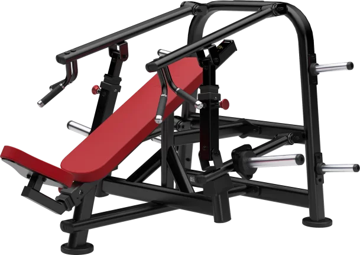
Contractor pectoral con poleas sentado
Pecho medio
Este se puede realizar en máquina o en polea con un banco, en este caso lo haremos en polea, la clave de este ejercicio es poner las poleas a la altura
de las clavículas y aguantar una excéntrica lenta a la par que hacer las repeticiones lentas.
3 series x 8-10 reps.
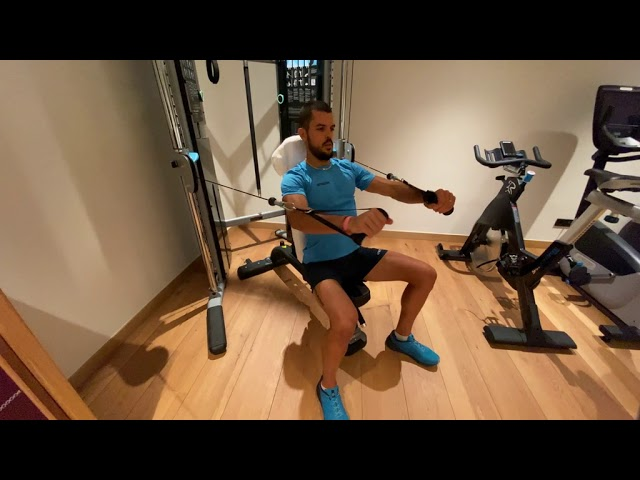
Press banca
Pecho alto
El press banca tiene dos movimientos, por un lado el levantamiento de la barra, que ha de ser rápido e intenso y, por otro lado, la excéntrica o bajada, que ha
de ser lenta y controlada. La barra se debe llevar al esternón y, al subir, quedar a la altura de los ojos a la par que se bloquean los hombros.
3 series x 6-4-2 reps
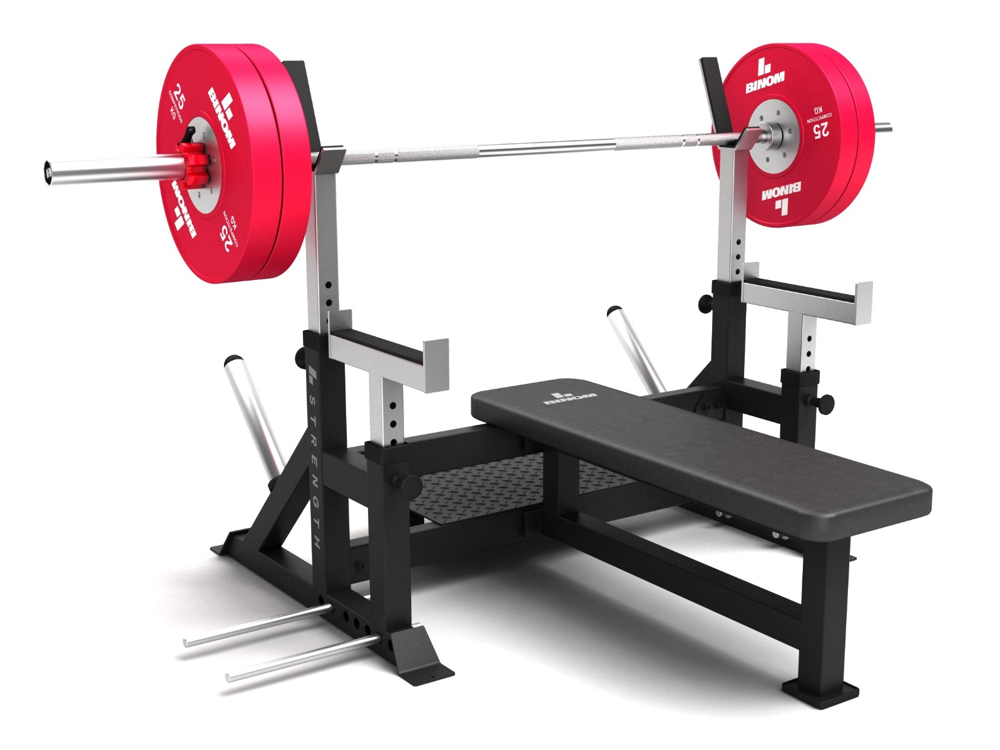
Cruce de poleas alto
Pecho bajo
El cruce de poleas consiste en poner las poleas arriba de todo y empujar hacia abajo casi en dirección al suelo. La clave de este ejercicio se encuentra en hacer fuerza
al final del recorrido y hacer una excéntrica lenta.
3 series x 8-12 reps.
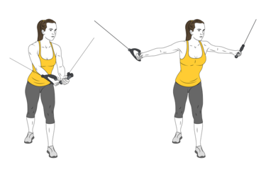
Press militar
Deltoides anterior
El press militar tiene como objetivo la zona anterior del hombro. Es clave empujar hacia arriba y que mas o menos los brazos hagan un ángulo de 90º al principio del movimiento.
3 series x 8-10 reps.
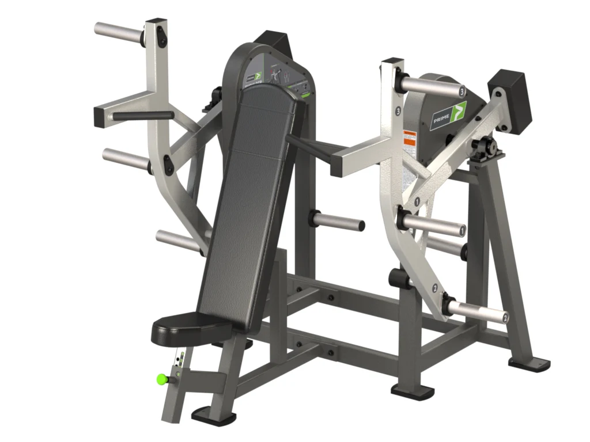
Elevaciones laterales
Deltoides medio o lateral
Las elevaciones laterales se pueden hacer en máquina, en polea o con mancuernas, según los gustos personales de cada uno, para mi gusto, preferiria hacerlas con polea, pues noto mejor
la tensión, se realizan con una muñequera y un agarre en la mano para hacer fuerza en el puño, la clave es empujar fuerte, mantener arriba y bajar despacio para así notar más tensión.
3 series x 10-12 reps.
Hombro posterior
Deltoides posterior
Las aperturas para hombro posterior tienen dos trucos básicos para notar mejor el hombro, el primero de ellos sería hechar el culo un poco para atras en el asiento, y, el segundo, no llevar los
brazos atras mucho más de un angulo de 180º.
3 series x 10-12 reps.
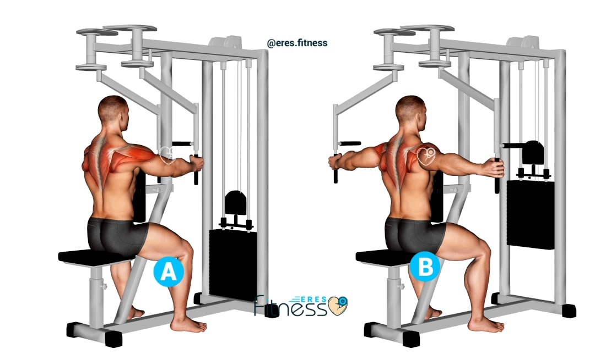
Press triceps
Cabeza lateral del tríceps
El press de triceps se puede hacer en polea o máquina, personalmente me gusta hacerlos en polea unilateral, la clave está en no separar el codo del cuerpo y apretar abajo cada repetición. Es importante también no realizar las series muy pesadas para poder ejecutar la técnica
a la perfección y lograr un rango mayor de repeticiones.
3 series x 12-14 reps.
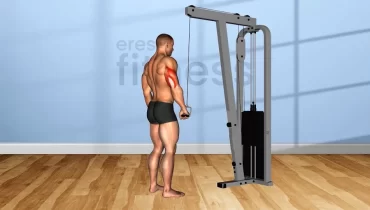
Extensión de triceps sobre cabeza
Cabeza larga del tríceps
En este ejercicio es clave estirar hasta el final y doblar hasta el final, para lograr un buen estiramiento y una buena contracción del musculo.
3 series x 8-10 reps.
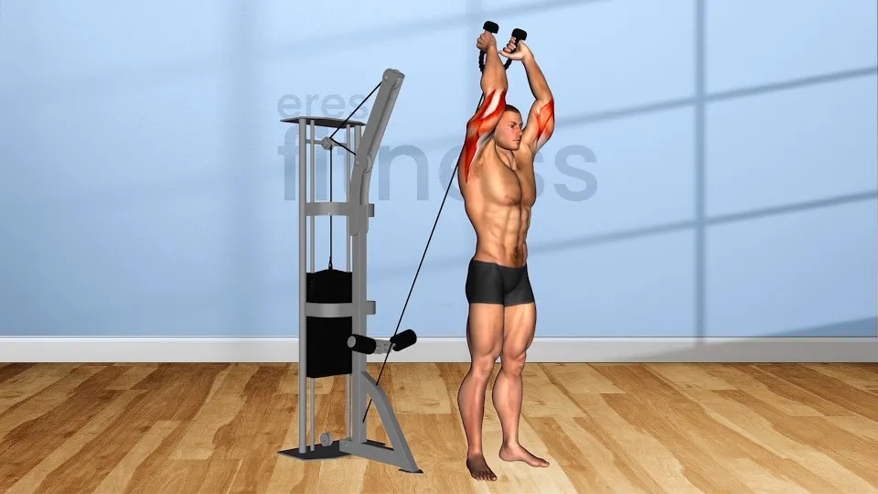
MARTES-ESPALDA, BÍCEPS (PULL)
Nombre
Grupo muscular trabajado
Descripción
Repeticiones
Imágen de la ejecución
Video de la ejecución
Jalón al pecho con agarre prono
Dorsal
El ejercicio se puede realizar con múltliples agarres, o bien un agarre abierto o bien, un agarre cerrado, se personaliza según las preferencias de cada uno. En mi caso, prefiero agarre abierto prono, pues enfatiza mejor el dorsal que el supino o el cerrado. La clave de este ejercicio es apretar al llegar a la contracción y aguantar una
excéntrica lenta.
3 series x 8-10 reps.
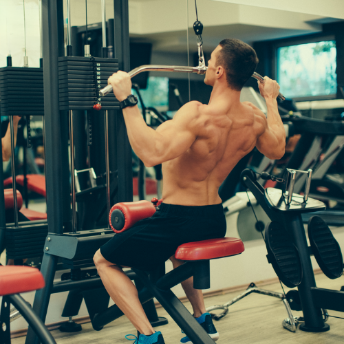
Remo alto unilateral
Dorsal
Este se puede realizar en máquina o en polea con un banco, en este caso lo haremos en máquina. Lo importante de este ejercicio es llevar el codo bien atrás al final de cada repetición y aguantar una excéntrica lenta.
3 series x 8-10 reps.
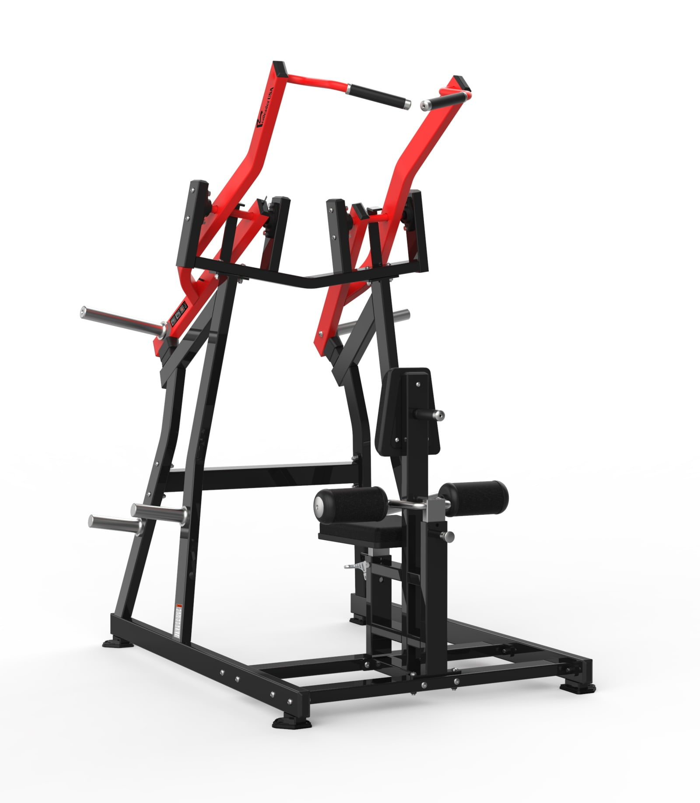
Remo gironda
Trapecio, infraespinoso, dorsal
La clave de este ejercicio es llevar los codos bien atrás y apretar al final de cada repetición. Se puede ejecutar con numerosos agarres aunque mi favorito es el cerrado.
3 series x 8-10 reps
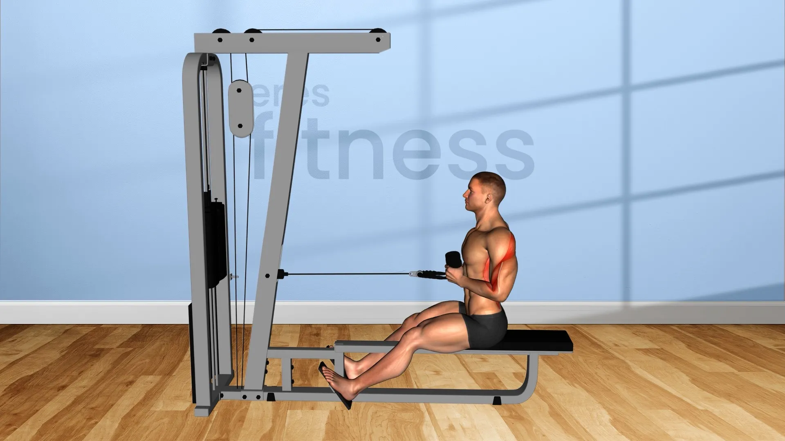
Pull over
Dorsal
El pull over es el ejercicio perfecto para finalizar un entrenamiento de espaldas, enfatizando el dorsal y fatigando este muchisimo, lo que nos ayudará a terminar de trabajarlo,
la clave de este ejercicio es llegar a una extensión completa del dorsal.
3 series x 8-12 reps.
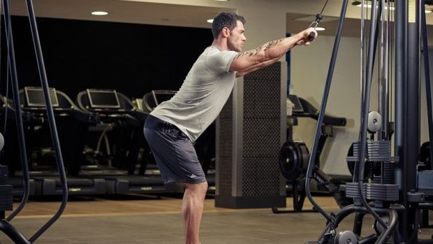
Curl biceps unilateral
Braquial anterior y braquiorradial
Es importante no llegar a un estiramiento total pues puede producir una lesión grave en el bíceps y, también es importante mantener una excentrica lenta.
3 series x 8-10 reps.
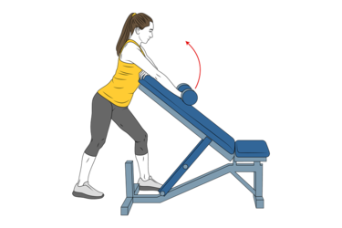
Curl martillo
Braquial
En el curl martillo, debes subir la mancuerna desde la cintura hasta la altura del pecho aproximadamente, aportando una excéntrica lenta y hacer las repeticiones en vertical.
3 series x 12-14 reps
Hombro posterior
Deltoides posterior
Las aperturas para hombro posterior tienen dos trucos básicos para notar mejor el hombro, el primero de ellos sería hechar el culo un poco para atras en el asiento, y, el segundo, no llevar los
brazos atras mucho más de un angulo de 180º.
3 series x 10-12 reps.
MIÉRCOLES- PIERNA COMPLETA (LEG)
Nombre
Grupo muscular trabajado
Descripción
Repeticiones
Imágen de la ejecución
Video de la ejecución
Aductores en máquina multicadera
Aductores
En este ejercicio es importante utilizar un peso que nos cueste mover y aguantar las repeticiones al cerra, además de realizar una excéntrica lenta.
3 series x 8-10 reps.
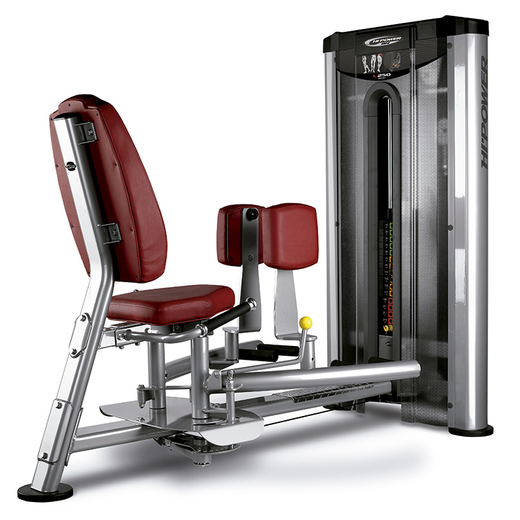
Elevación de talones
Gemelo
Este se puede realizar de múltiples formas, usando máquinas especializadas para gemelo o bien otro tipo de máquinas como prensas o máquinas de sentadilla que aunque estén enfocadas al cuadriceps, se pueden utilizar para gemelo.
3 series x 12-14 reps.
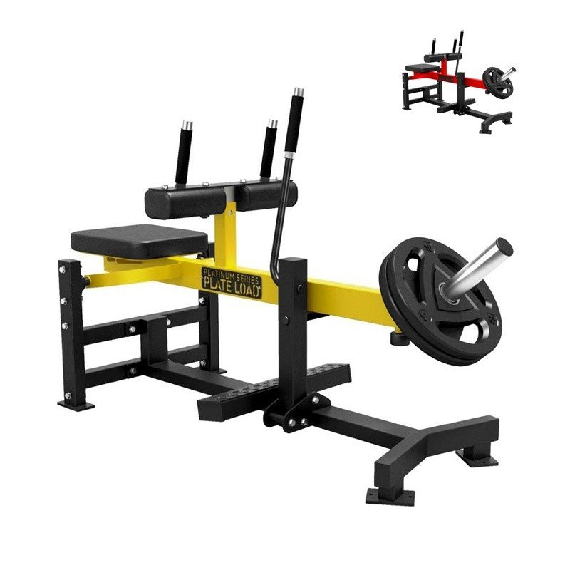
Leg curl
Femoral
En esta máquina es importante apretar cada repetición abajo y haceer una excéntrica muy lenta para poder llegar al fallo muscular más fácilmente. También es importante apretar bien el compresor de encima de las rodillas para que todo el movimiento enfatice perfectamente el femoral.
3 series x 9-10 reps
Jaca
Cuadriceps, glúteo
Es importante poner los pies en una posición que permita llegar hasta abajo del todo y debes poner un peso que consiga llegar a un nivel de esfuerzo extremo.
3 series x 8-10 reps.
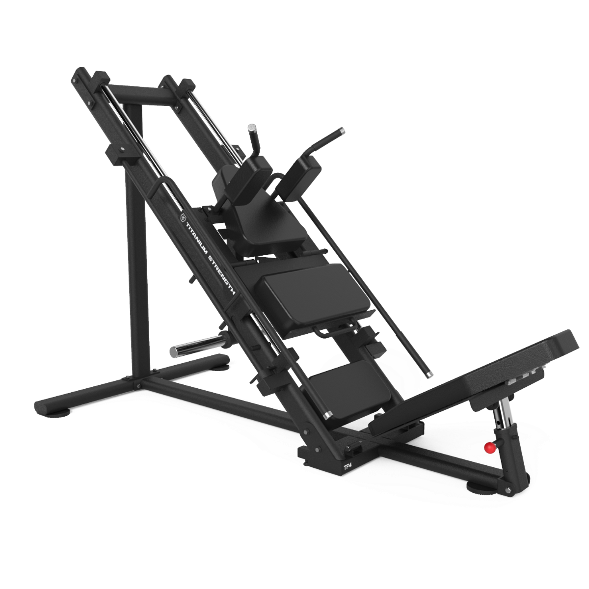
Prensa
Cuadriceps
Es clave en esta máquina realizar una excentrica lenta y una subida no muy rápida, también ajustar el respaldo del asiento lo más inclinado posible. Además, deberemos poner los pies en la parte baja de la plataforma si lo que queremos es enfatizar el cuadriceps, pues la parte superior enfatiza más el femoral.
3 series x 9-12 reps.
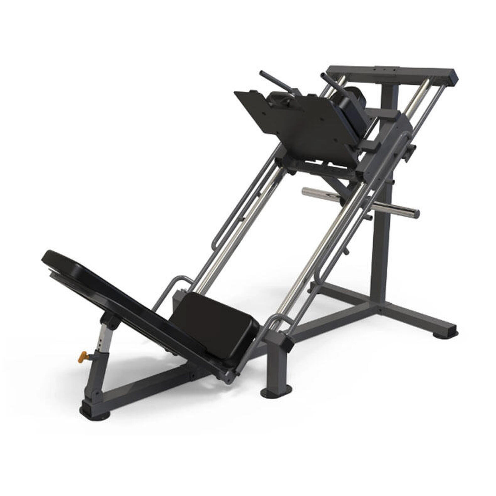
Zancadas
Cuadriceps
Seguramente estemos hablando del mejor ejercicio para rematar una sesión de pierna, este ejercicio consigue que lleguemos a un nivel de fátiga demasiado elevado. Además, no necesitaremos demasiados materiales, ya que se realiza con mancuernas o sin peso incluso. Lo importante de este ejercicio es bajar cada zancada bien abajo y llevar tu cuerpo al límite.
3 series x fallo.
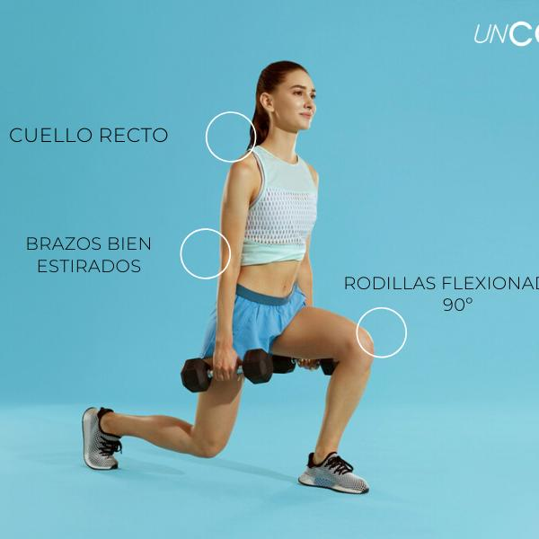
JUEVES-BRAZO COMPLETO (ARMS)
Nombre
Grupo muscular trabajado
Descripción
Repeticiones
Imágen de la ejecución
Video de la ejecución
Curl bayesian
Bíceps
El Curl bayesian es el ejercicio por excelencia para hacer crecer tus bíceps, el codo debe estar por detras del cuerpo, y debemos llegar a un estiramiento y a una flexión completa del bíceps. Las últimas repeticiones son las más duras pero también será donde aprovechemos más el ejercicio.
3 series x 10 reps.
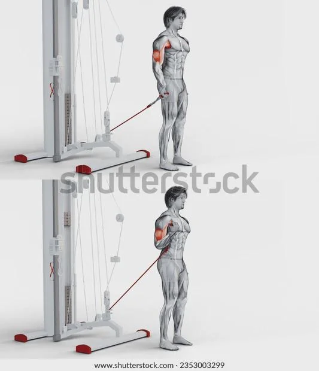
Curl biceps unilateral
Braquial anterior y braquiorradial
Es importante no llegar a un estiramiento total pues puede producir una lesión grave en el bíceps y, también es importante mantener una excentrica lenta.
3 series x 8-10 reps.
Press militar
Deltoides anterior
El press militar tiene como objetivo la zona anterior del hombro. Es clave empujar hacia arriba y que mas o menos los brazos hagan un ángulo de 90º al principio del movimiento.
3 series x 8-10 reps.
Elevaciones laterales
Deltoides medio o lateral
Las elevaciones laterales se pueden hacer en máquina, en polea o con mancuernas, según los gustos personales de cada uno, para mi gusto, preferiria hacerlas con polea, pues noto mejor
la tensión, se realizan con una muñequera y un agarre en la mano para hacer fuerza en el puño, la clave es empujar fuerte, mantener arriba y bajar despacio para así notar más tensión.
3 series x 10-12 reps.
Hombro posterior
Deltoides posterior
En este caso haremos un ejercicio de hombro posterior pero en polea, la clave de este ejercicio está en apretar las repeticiones atrás y hacer una excentrica lenta.
3 series x 10-12 reps.
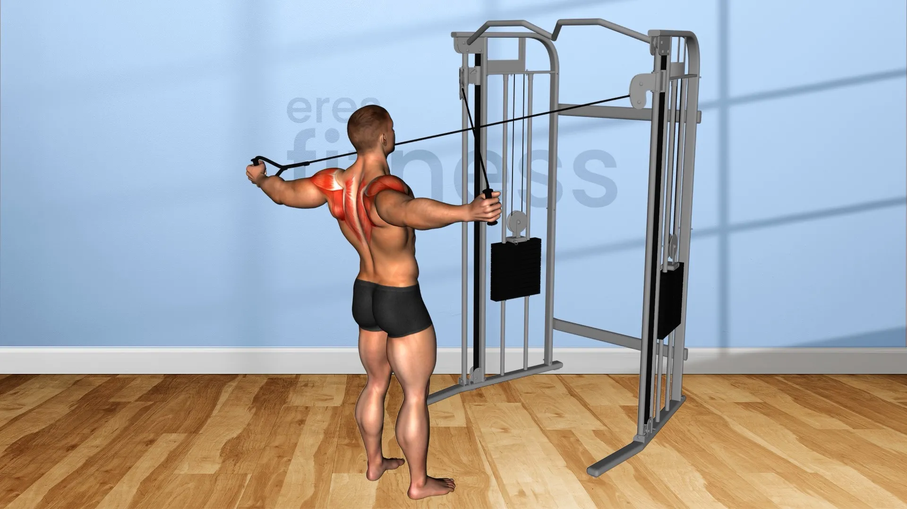
Press triceps
Cabeza lateral del tríceps
El press de triceps se puede hacer en polea o máquina, personalmente me gusta hacerlos en polea unilateral, la clave está en no separar el codo del cuerpo y apretar abajo cada repetición. Es importante también no realizar las series muy pesadas para poder ejecutar la técnica
a la perfección y lograr un rango mayor de repeticiones.
3 series x 12-14 reps.
Extensión de triceps sobre cabeza
Cabeza larga del tríceps
En este ejercicio es clave estirar hasta el final y doblar hasta el final, para lograr un buen estiramiento y una buena contracción del musculo.
.webp)